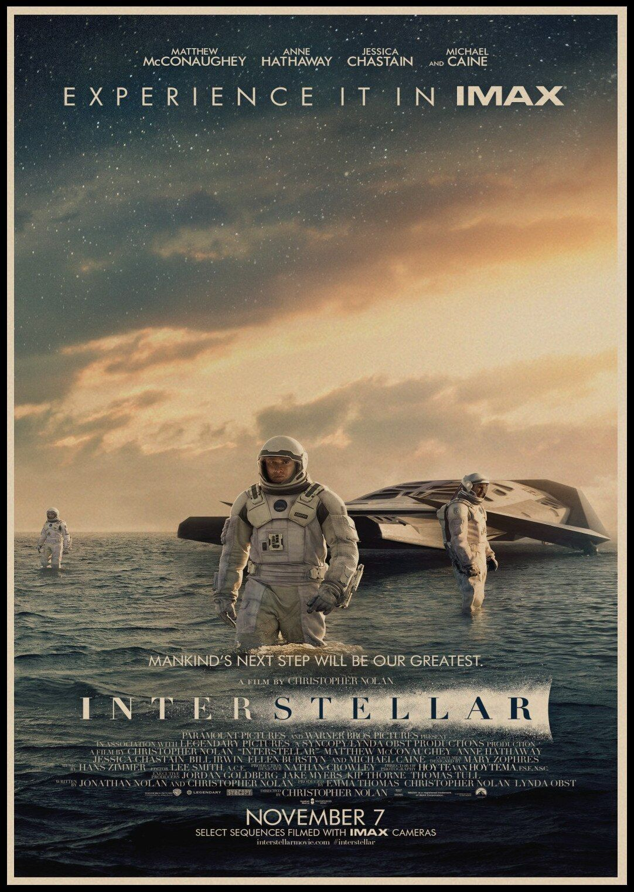

INTERSTELLAR: El viaje de la humanidad
Introducción:
El fin de la Tierra no es el fin de nosotros.
Estrenada en 2014 y dirigida por el aclamado cineasta Christopher Nolan, Interstellar se ha consolidado como una de las obras de ciencia ficción más ambiciosas y visualmente deslumbrantes del siglo XXI. Lejos de ser una simple aventura espacial, la película nos sumerge en un futuro distópico y desolador donde la humanidad se enfrenta a su inminente extinción. La Tierra, agotada tras décadas de sobreexplotación, ha dejado de ser un hogar viable; las plagas destruyen las cosechas, las tormentas de polvo asfixian a la población y el oxígeno se agota lentamente. En este contexto de desesperanza, la sociedad ha abandonado los sueños de exploración y el avance tecnológico para enfocarse en la mera supervivencia agrícola.
En el centro de esta crisis se encuentra Joseph Cooper, interpretado por Matthew McConaughey, un brillante ex-piloto e ingeniero de la NASA que se ha visto forzado a trabajar como granjero. Viudo y padre de dos hijos, Tom y Murph, Cooper representa la frustración de una generación a la que se le ha prohibido mirar hacia las estrellas. Sin embargo, un extraño fenómeno gravitacional en la habitación de su hija lo llevará a descubrir que los restos de la agencia espacial siguen operando en el más absoluto secreto, trabajando en un último y desesperado intento por salvar a la especie humana.
La premisa de Interstellar da un giro monumental cuando a Cooper se le revela que un misterioso agujero de gusano ha aparecido cerca de la órbita de Saturno, actuando como un puente hacia otra galaxia. Reclutado para liderar la tripulación de la nave Endurance junto a la Dra. Amelia Brand (Anne Hathaway) y un par de robots con inteligencia artificial, Cooper deberá dejar atrás a su familia, sabiendo que quizás nunca vuelva a verlos, para adentrarse en lo desconocido. Su misión: encontrar un nuevo mundo habitable antes de que el tiempo en la Tierra se agote.
Lo que hace que esta película sea una verdadera obra maestra es su base en la astrofísica real, respaldada por el trabajo del físico teórico y premio Nobel, Kip Thorne. A través de impresionantes representaciones de agujeros negros, planetas con olas del tamaño de montañas y dimensiones incomprensibles para la mente humana, Interstellar explora conceptos fascinantes como la relatividad y la dilatación del tiempo. Pero en el fondo, más allá de la ciencia exacta y los efectos visuales colosales, es una historia profundamente humana que nos plantea una pregunta trascendental: ¿puede el amor, al igual que la gravedad, ser una fuerza capaz de atravesar las barreras del tiempo y el espacio?
